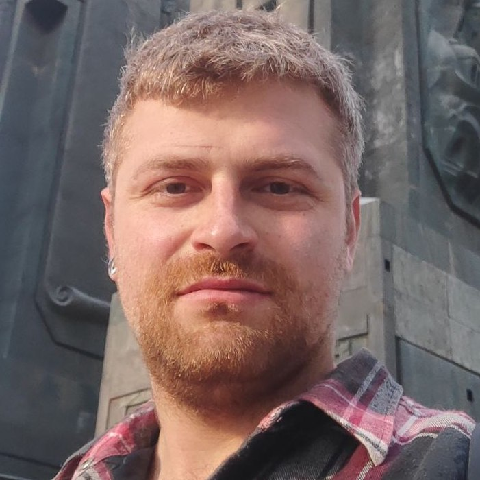
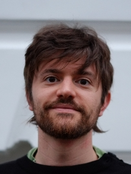
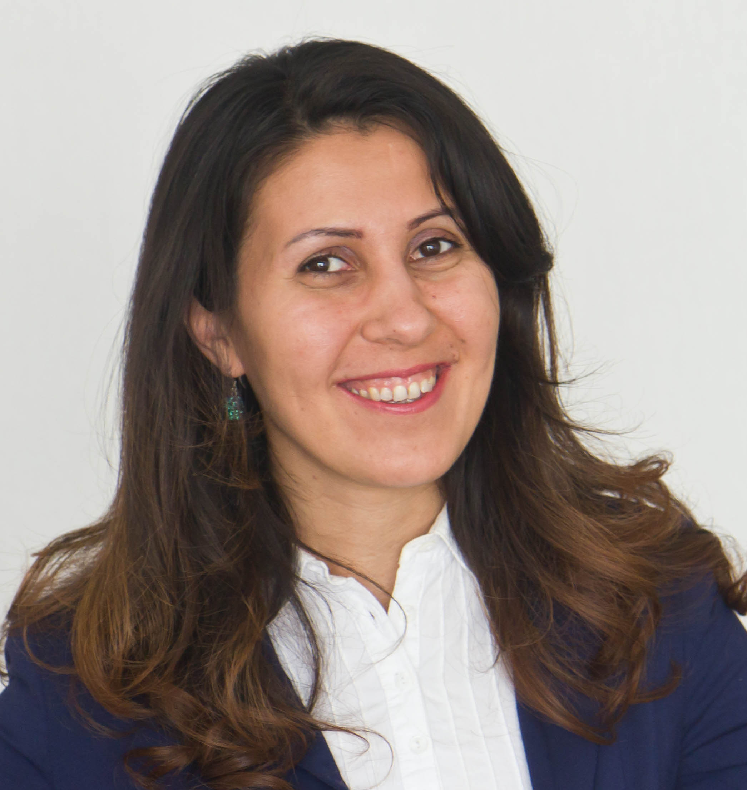
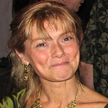
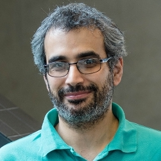
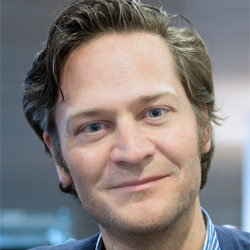
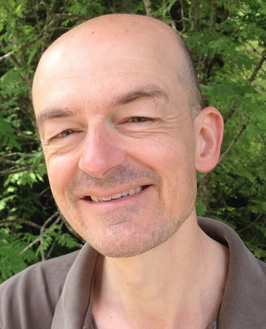
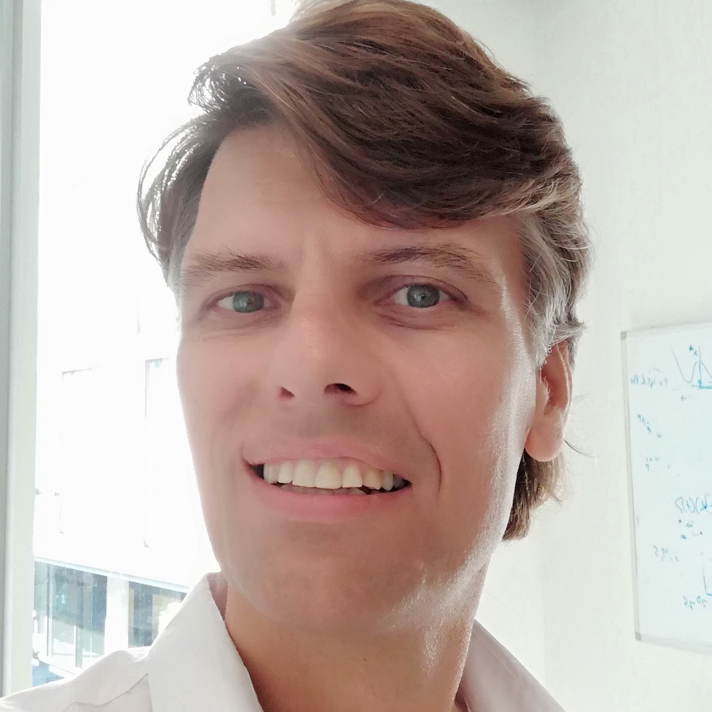
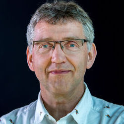
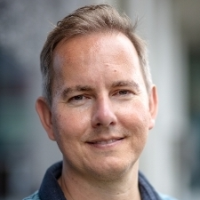

Research Priority Area AI for Sustainable Molecules and Materials AI4SMM Lab Members. Postdoctoral Fellows Project leaders Board members Postdoctoral Fellows Maxim N. Brodmerkel Marco Federici  Alexander Korotkevich Project leaders Peter Bolhuis Professor Computational Chemistry (HIMS)  Corentin Coulais Associate Professor Machine Materials Lab (IvI) Patrick Forré Assistant professor AI4Science, AMLab (IvI) Herke van Hoof Assistant professor AMLab (IvI)  Sara Jabbari-Farouji Assistant Professor Computational Soft Matter (IoP) Jan-Willem van de Meent Associate Professor AMLab (IvI) Alberto Pérez de Alba Ortíz Assistant Professor Computational Soft Matter (HIMS & IoP) Antonia Praetorius Assistant Professor Environmental Chemistry (IBED)  Francesca Quattrocchio Assistant Professor Plant Development & Genetics (SILS)  Saer Samanipour Assistant Professor Analytical Chemistry (HIMS)  Peter Schall Professor Soft Matter Physics (IoP) Noushine Shahidzadeh Professor Soft Matter (IoP)  Sander Woutersen Professor Molecular Photonics (HIMS) Board members Daniel Bonn Professor Soft Matter (IoP)  Bernd Ensing Associate Processor Computational Chemistry (HIMS)  Michel Haring Professor Plant Physiology (SILS) Jan-Willem van de Meent Associate Processor AMLab (IvI)  Chris Slootweg Associate Professor Synthetic Organic Chemistry (HIMS) Annemarie van Wezel Professor Environmental Ecology (IBED) Marcel Bartels AI4SMM Secretary (HIMS)